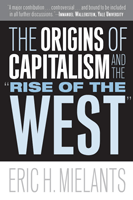

The origins of capitalism can be found in the Middle Ages
The origins of capitalism can be found in the Middle Ages


 The origins of capitalism can be found in the Middle Ages
The origins of capitalism can be found in the Middle Ages

|  |
The Origins of Capitalism and the "Rise of the West"Eric H. Mielantspaper EAN: 978-1-59213-576-9 (ISBN: 1-59213-576-5) |
"A major contribution to the worldwide debate on the origins of the modern world. It is controversial, encompassing in its survey of the data and the literature, and bound to be included in all further discussions."
—Immanuel Wallerstein, Yale University
Eric Mielants provides a fresh, interdisciplinary interpretation of the origins of modernity in general and of capitalism in particular. He argues that, contrary to established thinking, the "Rise of the West" should not be examined through the lens of the Industrial Revolution or the colonization of the New World but viewed through long-term developments that began in the Middle Ages.
A fascinating overview of civilizations in East Asia, South Asia, and northwestern Africa is provided and then systematically compared to developments in Europe at the same time. Utilizing this analysis, the book addresses some of the most important current debates in world history, comparative sociology, political economy, sociological theory and historical sociology. Mielants uncovers the ways that existing theories (such as Marxism, World-Systems Theory, and Smithian Modernization Theory) have suffered from either Eurocentric or limited temporal and spatial analyses, preventing them from fully explaining the reasons behind the emergence of capitalism in Western Europe.
Excerpt available at www.temple.edu/tempress
"The strength of this book is its careful comparisons among regions and the strong effort to overcome the Eurocentrism that has undeniably been a great plague on our efforts to comprehend and explain the rise of the West."
—Christopher Chase-Dunn, Department of Sociology, University of California, Riverside
"Mielants has pulled together a vast mass of material and challenges hypotheses that have been in danger of being repeated as unquestionable dogmas in some circles."
—International Socialism
"Overall, Mielants’ timely book offers a well-thought argument that bucks a popular, ahistorical trend locating the ‘rise of Europe’ in very specific conditions that emerged only in the 18th or even the 19th century. Summing Up: Essential."
—Choice
"Overall, this is an erudite and concise argument that marshals a massive literature in its defense. The book will appeal to a wide range of substantive interests due to its multi-regional comparative and historical analysis. And regardless of your willingness to agree with Mielants's thesis, you will undoubtedly find it thought provoking.... While this is certainly not the last word in this ongoing discussion, it is a worthy entry nonetheless."
—The International Journal of Comparative Sociology
"Mielants makes a noteworthy contribution to the transition debate and more broadly to the historical sociology literature."
—Contemporary Sociology
"[A]n important contribution both to world history and to world-systems analysis.... Mielants is able to clear a relatively novel path by assembling a holistic and coherent account that challenges some of them prevailing wisdom regarding why, how, and when capitalism emerged in Europe. In doing so, he provides an intriguing explanation of why Europe ultimately gained ascendance in the world-system."
—Journal of World-Systems Research
"This small book, on a very big topic, makes a substantial contribution to the debates on which elements of European society were crucial to its later economic and military might.... One of the major assets of this book is that despite its brief length, it fully engages in comparisons of European history with developments in North Africa, China and south Asia.... Mielants has given us a deeply informed and important new twist on old arguments about the role of merchants and cities in the origins of capitalism. It is an argument that deserves attention and should provoke fruitful debates."
—The British Journal of Sociology/i>
"This is a very good book...[Mielants'] documentation is extremely impressive.... Mielants's study will be very useful for those who have an interest in understanding the variation in long-term path dependencies of the socio-political-economic configurations of capitalist societies.... The cross-disciplinary breadth and range of geographical knowledge of [the] author [is] quite remarkable...highly recommended for scholars interested in the most recent explanations for the development of Western capitalism."
—Perspectives on Politics
"The arrival of The Origins of Capitalism and the Rise of the West (sic) is timely in that it can assist in the refocusing of understandings of capitalism as something that is not necessarily exploitative, while avoiding the toxic excesses that have resulted in the current economic downward spiral. Although this work is thorough, well structured and extensively annotated with an excellent bibliographic analysis, it is a testament to the author's skills that it is also so well written. His seamless usage of appropriate citations adds a strong degree of readability and clarity which so many similar works lack. It will likely become a central resource for historical studies of capitalism in the future."
—Political Studies Review
"Eric Mielants has produced an interesting and insightful work of historical sociology that is packed with very useful empirical detail on the topic of the rise of the West/the rise of capitalism. Not only does the book cover Europe in some depth, but in an impressively wide-ranging comparative analysis, it also focuses in detail on China, South Asia and North Africa, producing a very rich pool of (secondarily derived source) material. In general, Mielants covers a great deal of ground in a mere 162 well-written and clearly argued pages.... it is certainly a useful addition to the vast literature on the subject."
—Capital & Class
Also available in e-book
Acknowledgments v
Introduction viii
Chapter 1: Perspectives on the Origins of Merchant Capitalism in Europe 1
Orthodox Marxism 1
Brennerism (or the Brenner Approach) 2
The Modernization Theory 7
World-Systems Analysis 11
Temporal Predisposition 13
Spatial Predisposition 32
The Inter-City-State System of the Middle Ages 33
Tentative Conclusions 45
Chapter 2: The Political Economies of China and Europe Compared 49
The Chinese Socioeconomic Revolution during
the Sung Dynasty (c. 900-1280) 50
China and the Mongols 57
Ming China and Europe: divergent paths 63
Conclusions vis-à-vis European Capitalism 81
Chapter 3: The Political Economies of South Asia and Europe Compared
(c. 1200-1500 AD) 90
Trade and Commodity Flows in the South Asian Region 90
States and State Structures in South Asia 97
The Strategies of Elites in South Asia and Europe 107
The Impact of the Perilous Frontier 117
Conclusions 127
Chapter 4: The Political Economies of Western Europe and Northern
Africa Compared 131
Northern Africa and the Sudanic States (13th-15th Centuries) 131
North African Cities and States and the Balance of
Power in the Mediterranean 142
Conclusions 150
Chapter 5: Conclusion
Was the Western-European City-State in the Middle Ages a European Miracle? 162
Bibliography 171
 | Eric H. Mielants is an Assistant Professor in the Department of Sociology and Anthropology, in the College of Arts and Sciences, at Fairfield University. |
Sociology
Political Science and Public Policy
Philosophy and Ethics
© 2015 Temple University. All Rights Reserved. This page: http://www.temple.edu/tempress/titles/1886_reg.html.